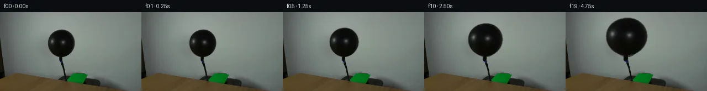

![首帧]()

Round 00
2026-11-04T23:17:07.781768+00:00像素候选变化代码 +180/−0inspection 更新
pixels 56359dd57b6b826c · code 7461e9ba047f59a5
查看本轮 generate.py 真实 diff
--- previous/generate.py +++ current/generate.py @@ -0,0 +1,180 @@ +#!/usr/bin/env python3 +"""Generate the 20-frame locked-off balloon inflation sequence.""" + +from pathlib import Path + +import cv2 +import numpy as np +from PIL import Image, ImageDraw + +import artifact_io + + +ROOT = Path(__file__).resolve().parent +W, H = 256, 144 +ANCHOR = (111.5, 88.0) + + +def extract_balloon_alpha(source: np.ndarray) -> np.ndarray: + """Extract the balloon body/neck using local darkness and row spans. + + The source has a bright background around a single near-black, center-connected + silhouette. Filling the selected span per scanline preserves the real interior + highlight while keeping unrelated lower-frame dark objects out of the mask. + """ + luminance = source.astype(np.float32).mean(axis=2) + hard = np.zeros((H, W), np.uint8) + + for y in range(28, 90): + candidates = np.flatnonzero(luminance[y, 75:151] < 112.0) + 75 + if candidates.size == 0: + continue + + # Keep candidates around the balloon's known center column. The wide + # allowance captures the outer silhouette, including the highlight gap. + candidates = candidates[(candidates >= 82) & (candidates <= 140)] + if candidates.size: + hard[y, candidates.min() : candidates.max() + 1] = 255 + + # Remove any premature scanlines and ensure the mask is limited to the observed + # black envelope plus its short neck, never the long hose below it. + hard[:31] = 0 + hard[90:] = 0 + + # A subpixel feather reproduces the camera's naturally soft edge after warping. + alpha = cv2.GaussianBlur(hard.astype(np.float32) / 255.0, (0, 0), 0.62) + alpha[alpha < 0.003] = 0.0 + return alpha + + +def growth(t: int) -> tuple[float, float]: + """Pressure-like eased monotonic growth, wider than tall near the end.""" + p = t / 19.0 + eased = p * p * (3.0 - 2.0 * p) + # A minute smooth compliance term changes curvature without defeating growth. + compliance = 0.004 * np.sin(np.pi * p) * eased + sx = 1.0 + 0.55 * eased + compliance + sy = 1.0 + 0.39 * eased - 0.5 * compliance + return float(sx), float(sy) + + +def affine_about_anchor(sx: float, sy: float) -> np.ndarray: + ax, ay = ANCHOR + return np.array( + [[sx, 0.0, ax * (1.0 - sx)], [0.0, sy, ay * (1.0 - sy)]], + dtype=np.float32, + ) + + +def render_frames(source: np.ndarray) -> tuple[np.ndarray, np.ndarray]: + alpha = extract_balloon_alpha(source) + frames = [source.copy()] + src_float = source.astype(np.float32) + + for t in range(1, 20): + sx, sy = growth(t) + matrix = affine_about_anchor(sx, sy) + warped_rgb = cv2.warpAffine( + src_float, + matrix, + (W, H), + flags=cv2.INTER_CUBIC, + borderMode=cv2.BORDER_REPLICATE, + ) + warped_alpha = cv2.warpAffine( + alpha, + matrix, + (W, H), … diff truncated; 93 more lines …